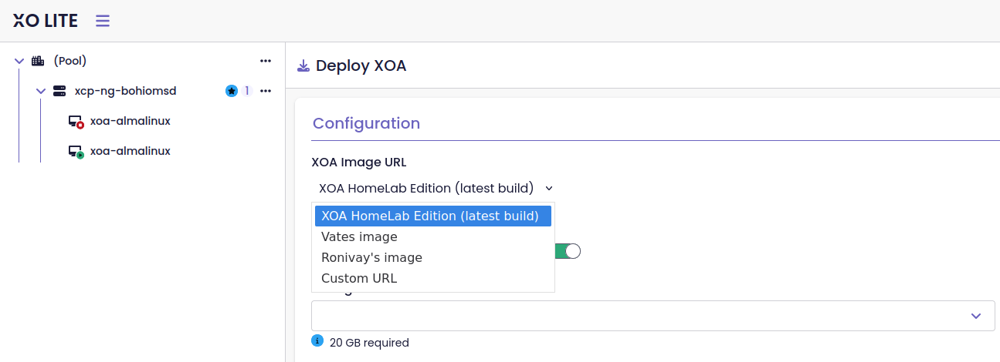

# Patching XO Lite without forking it
This is the second post of the [XCP-ng HL series](https://vagrantin.github.io/blog/). The [first one](../20260805/XcpHlTheJourney.html) told the story; this one opens the first component: how the "Deploy XOA" flow in XO Lite gets patched, without maintaining a fork of Xen Orchestra.
## 01, The problem
XO Lite ships inside every XCP-ng host. Its "Deploy XOA" button does one thing: it calls XAPI's `VM.import` with a hardcoded URL, `http://xoa.io/xva`, the official Vates appliance. I wanted that same one-click flow, but pointing at images of my choosing.
The obvious answer is to fork xen-orchestra and carry the change. I didn't want that. A fork of a repository that active means rebasing forever, and my change is tiny compared to the codebase.
So the `xolite-ce` repository contains no Xen Orchestra code at all. It's a handful of files: an `UPSTREAM_TAG` pin, a `patches/` directory, an RPM spec, and one GitHub Actions workflow. At build time the workflow clones upstream, applies the patches to the TypeScript source, builds, and packages. Upstream stays upstream.
For readers of the [April post](../20260401/XCP-ngCommunityEdition.html): the very first version of this patched the compiled JavaScript with `sed`. That died fast: Vite content-hashes its output filenames, so every upstream build broke the patch. Patching the source before the build is what made the whole thing stable.
## 02, What the patch actually does
The target is one file: `@xen-orchestra/lite/src/pages/xoa-deploy.vue`. After patching, the deploy view grows a source dropdown with four options:
- **XOA HomeLab Edition** (the default), my Xen Orchestra built from source
- **Vates image**, the official appliance, untouched upstream behaviour
- **Ronivay's image**, the community prebuilt
- **Custom URL**, any `.xva` or `.xva.gz` over HTTP or HTTPS

The interesting part is how the XOA-HL option finds its image. The URL is not hardcoded, it is resolved at deploy time from the GitHub releases API. Which repository, though, is worth a sentence: the two XOA-HL artifacts are published separately. The RPM that installs Xen Orchestra is released from `xoa-hl`, the repo that patches and packages it. The `.xva` appliance image is released from `build-xoa-hl`, the repo whose agent builds it. Artifacts live where they are produced, so the resolver queries `build-xoa-hl`:
```ts
const XOA_IMAGE_RELEASES_API =
'https://api.github.com/repos/Vagrantin/build-xoa-hl/releases?per_page=30'
const XOA_HL_IMAGE_TAG_PREFIX = 'xoa-image-'
async function resolveXoaHlImageUrl(): Promise<string> {
const response = await fetch(XOA_IMAGE_RELEASES_API)
if (!response.ok) {
throw new Error(`GitHub releases fetch failed: ${response.status}`)
}
const releases = await response.json()
const candidates = releases
.filter(release => release.tag_name.startsWith(XOA_HL_IMAGE_TAG_PREFIX))
.flatMap(release => {
const asset = release.assets.find(
a => a.name.endsWith('.xva') || a.name.endsWith('.xva.gz'))
return asset === undefined ? [] : [{ release, asset }]
})
.sort((a, b) =>
Date.parse(b.release.published_at) - Date.parse(a.release.published_at))
if (candidates.length === 0) {
throw new Error('No XOA-HL image release found')
}
return candidates[0].asset.browser_download_url
}
```
The `xoa-image-` prefix and the asset extension check are guards rather than necessities now that images have a repo to themselves. They are the same predicate the build agent applies when it publishes, so the reader and the writer of those releases agree on what an image release looks like.
The explicit sort is the part I got wrong first. Every `xoa-image-*` release built from one `build-xoa-hl` commit shares a single `created_at`, the date of the tag's target commit, so the API's list order is not chronological between releases made the same day. Reading it newest-first, as the first version did, silently deploys an arbitrary one of them. Sorting on `published_at` client-side is what makes "the newest image" actually mean the newest image.
So when a new appliance image is published, every host picks it up on the next deploy. Nothing to rebuild, nothing to update on the host side.
The routing then splits in two. The Vates option calls `VM.import` directly, exactly like upstream. The three others go through `xoa-proxy`, a small service on the host that handles gzip decompression and HTTPS sources, including self-signed certificates, behind a "verify SSL" toggle in the form. That service is the next post, so I'll leave it at that here.
One more small thing the patch does: Ronivay's image ships with baked-in credentials, so when you select it, the login fields switch to read-only and show the defaults instead of asking you to invent credentials that would be ignored anyway. And there's one genuine bugfix: upstream destroys the VM's first VIF unconditionally after import, which crashes on images that come without one; the patch guards it.
## 03, xoa-deploy-patcher: the answer to a problem I no longer have
How do you apply a patch to a file you don't control? The classic answer is a `.patch` file and `git apply`, and that is where I started. It lasted about as long as it took upstream to touch the file.
The real trouble was not the tool, it was that I was building against xen-orchestra master. Xen Orchestra moves fast. Builds broke constantly, and every break was costing me to much time.
`xoa-deploy-patcher` was the escape. Instead of matching on context, it matches on exact anchors: each transformation names a string that has to appear in the file exactly once. Upstream drift stops being a fuzzy-match lottery and becomes a named, immediate failure.
It helped, and it was still not enough. Following master was the actual problem, and no patching tool solves that one.
So I stopped chasing upstream. Following the newest `xo-lite-v*` tag rather than master bought me some calm, until v0.23.0 landed and broke everything anyway. The end state is a fixed point of Xen Orchestra 5: this repository pins one xo-lite tag, and XOA-HL pins the last XO 5.x commit. Upstream cannot move underneath me any more, and I get to spend my evenings on the XCP-HL distribution instead of on someone else's merge queue.
That leaves `xoa-deploy-patcher` in a strange position. Against a frozen tree its selling point, catching drift the moment it happens, has nothing left to catch, and a plain `.patch` file would do the job perfectly well. It stays because it works, and because replacing it would buy me nothing today. It will go when I redesign the downstream build model in a future release. Until then it is what actually runs, so it is worth explaining.
It is a small Rust program, [`xoa-deploy-patcher`](https://github.com/Vagrantin/xoa-deploy-patcher) and a list of search and replace pairs:
```rust
struct PatchDefinition {
name: &'static str,
search: &'static str,
replace: &'static str,
}
PatchDefinition {
name: "Vue Imports Validation Landmark",
search: "import { computed, ref } from 'vue'",
replace: "import { computed, ref, watch } from 'vue'",
},
```
Thirteen of those, from a one-line import tweak to the full constants block. The part I care about is the execution rule: every `search` string must match **exactly once**.
```rust
let matches = content.matches(patch.search).count();
if matches == 0 {
eprintln!("[PATCH FAILURE] Missing structural milestone anchor: '{}'", patch.name);
process::exit(1);
} else if matches > 1 {
eprintln!("[PATCH FAILURE] Ambiguous structural target: '{}'", patch.name);
process::exit(1);
}
```
Zero matches means upstream moved the code I anchor on: the build fails with the name of the patch that broke, and I know exactly what to look at. Two or more matches means my anchor is ambiguous and could patch the wrong place, also a hard failure. Nothing is ever applied halfway and nothing is ever applied silently, which is the one property I want to keep in whatever eventually replaces this.
The compiled binary is commited into `patches/` (468 KB), so the CI job doesn't need a Rust toolchain, it just runs it against the cloned source.
Two side patches ride along, both one-liners as shell scripts. The dropdown labels are new i18n keys, so `update_locales.sh` merges a small `en-hl.json` into upstream's locale file with `jq`. And the XO Lite loader gets swapped: on a stock host, the page XAPI serves is a small loader that fetches the current XO Lite build from `lite.xen-orchestra.com` at load time. That's a good upstream default (XO Lite stays current without host updates), but it would replace my patched build with the stock one on every page load. The replacement loader fetches the locally installed build from the host itself, so what's on disk is what runs.
## 04, Pinning upstream: the UPSTREAM_TAG story
Until mid-July, the workflow cloned xen-orchestra at the newest `xo-lite-v*` tag. Then xo-lite v0.23.0 landed and every nightly build failed from July 12 on. That's the problem with "build against latest": upstream decides when your pipeline breaks, and it will pick a day you're busy.
The fix is one file at the repo root:
```
$ cat UPSTREAM_TAG
xo-lite-v0.21.0
```
The workflow reads it and clones exactly that tag:
```yaml
- name: Clone xen-orchestra at pinned tag
run: |
git clone --depth 1 \
--branch "${{ steps.xo-tag.outputs.tag }}" \
https://github.com/vatesfr/xen-orchestra.git
```
v0.21.0 is the last version that builds clean with my patches. I’ll move to future version when I’m ready for it.
## 05, From patched source to RPM
The workflow, condensed:
1. Read `UPSTREAM_TAG`, clone xen-orchestra at that tag
2. Run the patch pipeline (locales, loader, `xoa-deploy-patcher`)
3. **Verify the patch in the source**, grep asserts `lite.xen-orchestra.com` is gone and the community URLs are present, before spending twenty minutes on a build
4. `yarn install` + `yarn build:xo-lite`
5. **Verify the build output**, same greps against `dist/`, catching anything the bundler dropped
6. Tarball the dist (with an asserted file list), `rpmbuild`, GPG-sign, publish as a GitHub release
The spec lines in the RPM:
```
Name: xo-lite-ce
Provides: xo-lite = %{version}-%{release}
Obsoletes: xo-lite
Requires: xoa-proxy
Requires: xcp-hl-release
```
`Provides`/`Obsoletes` is what lets the package cleanly replace the stock `xo-lite` RPM on an XCP-ng host, everything lands in `/opt/xensource/www`, right where XAPI serves it.
`Obsoletes: xo-lite , is to make sure my package xo-lite-ce is always deployed regardless the version of upstream.
The two `Requires` pull in the rest of the stack. `xoa-proxy` is the streaming service the UI depends on. `xcp-hl-release` ships the yum repository configuration and the signing key, so a host that has the UI also knows where its updates come from and how to verify them.
The RPM `Release` field has a `ceN` counter from the release tag, with the short commit of the xolite-ce repo (`Release: %{_release}.g%{_shortcommit}.xcpng8.3`).
## 06, Closing
Still open on this module: the deploy button doesn't switch state on success yet ([xcp-hl#31](https://github.com/Vagrantin/xcp-hl/issues/31)), the RPM should carry the LICENSE properly ([xcp-hl#32](https://github.com/Vagrantin/xcp-hl/issues/32)), the `created_at` quirk behind that client-side sort deserves fixing at the source instead of being worked around in the browser ([xcp-hl#41](https://github.com/Vagrantin/xcp-hl/issues/41)), and the unversioned `Obsoletes` wants revisiting the next time the upstream pin moves ([xcp-hl#42](https://github.com/Vagrantin/xcp-hl/issues/42)).
Next post: `xoa-proxy`, the small Rust service that streams these images into XAPI, and what it's like to write a daemon that lives in Dom0.